Candidate List 20250714Previous Day Next Day
Section 1: New Sources (age<1d) Section 2: Old (1-5d) sources observed last nightplaceholder
Section 1: New Afterglow/FBOT Cands Last Night (1)
1. ZTF25abbhgbk (Afterglow?) [Back to Top] [Share] [Trigger Swift] [Fritz] [Lasair]RA, Dec: 2.48293, -1.47085 0h 9m55.90s, -1d-28m-15.08sGalactic (l, b): 99.99713, -62.47986 ext(g-r) = 0.042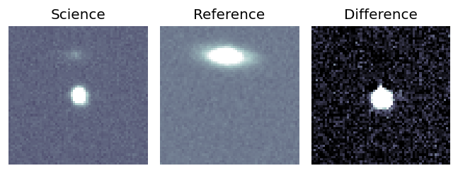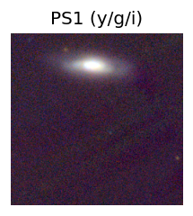
PS1: 0 sources in 3 arcsec
LegacySurvey: 1 sources in 3 arcsec Closest: d = 5.47 arcsec, 329.5 deg (east of north) photoz=1.01 (68% bounds 0.68, 1.65), type=PSF peak abs mag = -31.9 (68% bounds -30.82, -33.2)
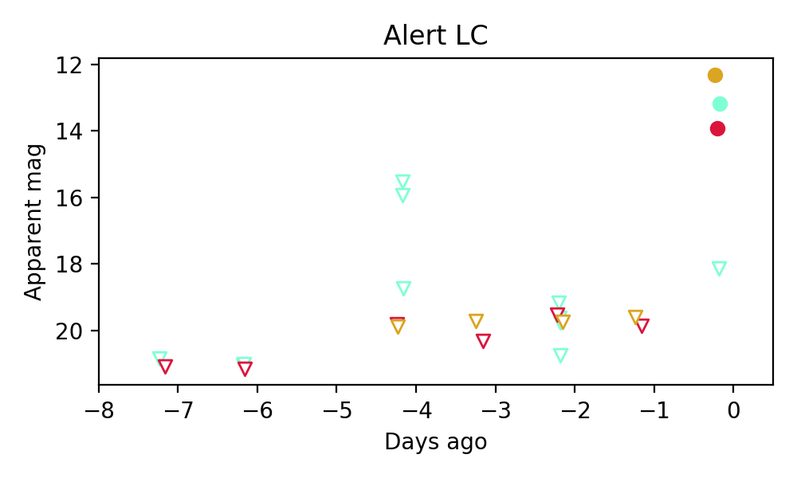
Extinction-corrected gr color:
From alerts: -0.79 +/- 0.02 mag
Extinction-corrected gi color:
From alerts: 0.8 +/- 0.03 mag
Extinction-corrected ri color:
From alerts: 1.6 +/- 0.02 mag
Consistent with synchrotron, g-r>0!
Rise Rate:
g: 301.16 mag/day
r: 6.23 mag/day
i: 7.21 mag/day
Fade Rate:
g: -99 mag/day
r: -99 mag/day
i: -99 mag/day
Section 2: Older Sources Observed Last Night (4)
0. ZTF25abazrkc (Afterglow?) [Back to Top] [Share] [Trigger Swift] [Fritz] [Lasair]RA, Dec: 280.86462, -16.00619 18h43m27.51s, -16d 0m-22.30sGalactic (l, b): 17.75075, -5.50624 ext(g-r) = 0.441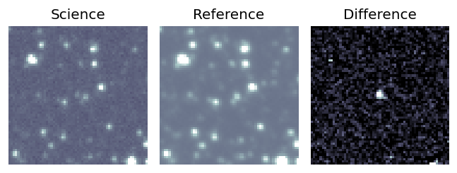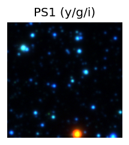
PS1: 0 sources in 3 arcsec
LegacySurvey: 0 sources in 3 arcsec
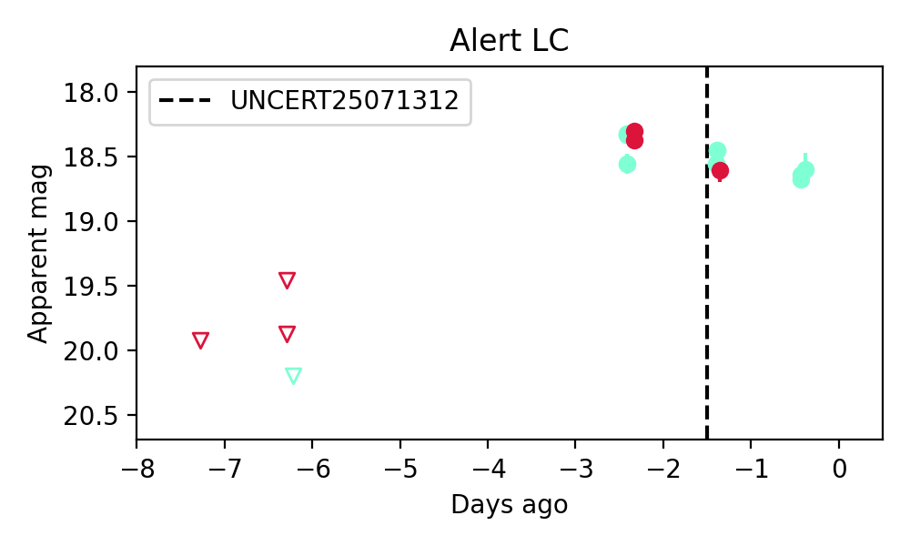
Extinction-corrected gr color:
From alerts: -0.56 +/- 0.09 mag
Rise Rate:
g: -99 mag/day
r: 0.4 mag/day
i: -99 mag/day
Fade Rate:
g: 0.14 mag/day
r: 0.28 mag/day
i: -99 mag/day
1. ZTF25abbazdr (Afterglow?) [Back to Top] [Share] [Trigger Swift] [Fritz] [Lasair]RA, Dec: 35.55896, 41.44074 2h22m14.15s, 41d26m26.68sGalactic (l, b): 140.66985, -18.2825 ext(g-r) = 0.054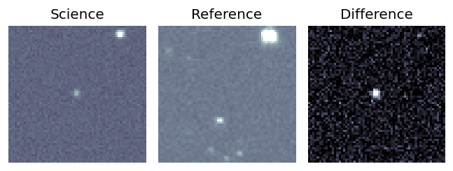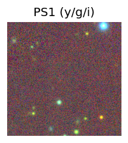
PS1: 1 source in 3 arcsec Closest: d = 0.07 arcsec photoz=0.73+/-0.15 peak abs mag = -25.34
LegacySurvey: 0 sources in 3 arcsec

Extinction-corrected gi color:
From alerts: -0.36 +/- 99 mag
Rise Rate:
g: 0.93 mag/day
r: -99 mag/day
i: -99 mag/day
Fade Rate:
g: 0.28 mag/day
r: -99 mag/day
i: -99 mag/day
2. ZTF25abbfvsk (FBOT?) [Back to Top] [Share] [Trigger Swift] [Fritz] [Lasair]RA, Dec: 274.52479, 25.31037 18h18m5.95s, 25d18m37.34sGalactic (l, b): 52.65887, 18.1537 ext(g-r) = 0.189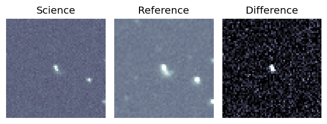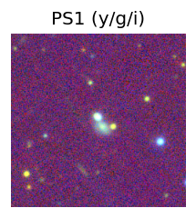
PS1: 1 source in 3 arcsec Closest: d = 0.65 arcsec photoz=0.10+/-0.01 peak abs mag = -19.84
LegacySurvey: 0 sources in 3 arcsec
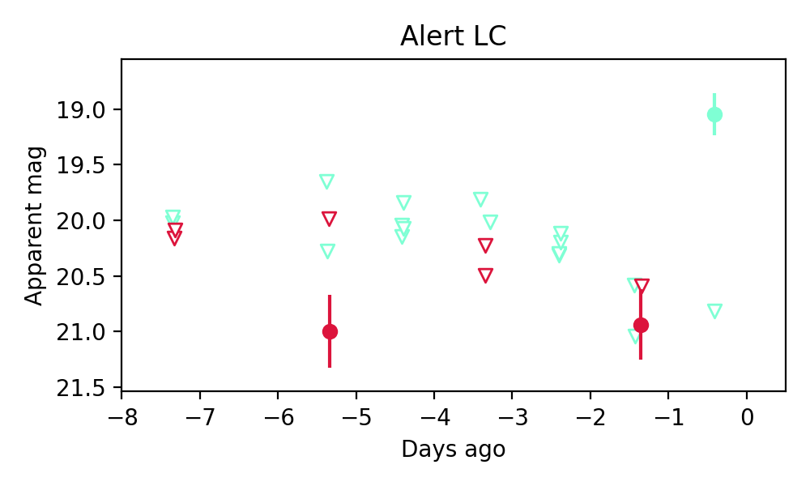
Extinction-corrected gr color:
From alerts: -0.09 +/- 99 mag
Rise Rate:
g: 1.95 mag/day
r: -99 mag/day
i: -99 mag/day
Fade Rate:
g: -99 mag/day
r: -99 mag/day
i: -99 mag/day
3. ZTF25abbgcjf (FBOT?) [Back to Top] [Share] [Trigger Swift] [Fritz] [Lasair]RA, Dec: 315.57196, 22.08218 21h 2m17.27s, 22d 4m55.84sGalactic (l, b): 68.76134, -15.91843 ext(g-r) = 0.152 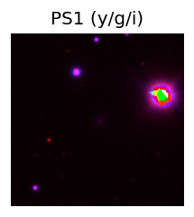
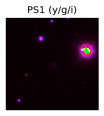
PS1: 1 source in 3 arcsec Closest: d = 1.34 arcsec photoz=0.10+/-0.01 peak abs mag = -19.55
LegacySurvey: 0 sources in 3 arcsec
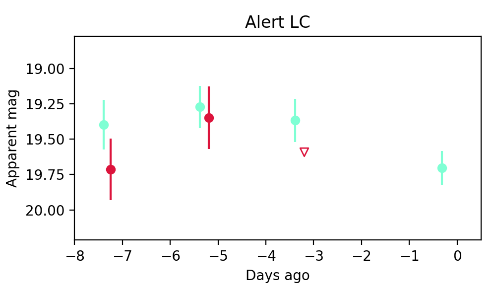
Extinction-corrected gr color:
From alerts: -0.47 +/- 0.28 mag
Rise Rate:
g: 0.39 mag/day
r: 0.12 mag/day
i: -99 mag/day
Fade Rate:
g: -99 mag/day
r: -99 mag/day
i: -99 mag/day